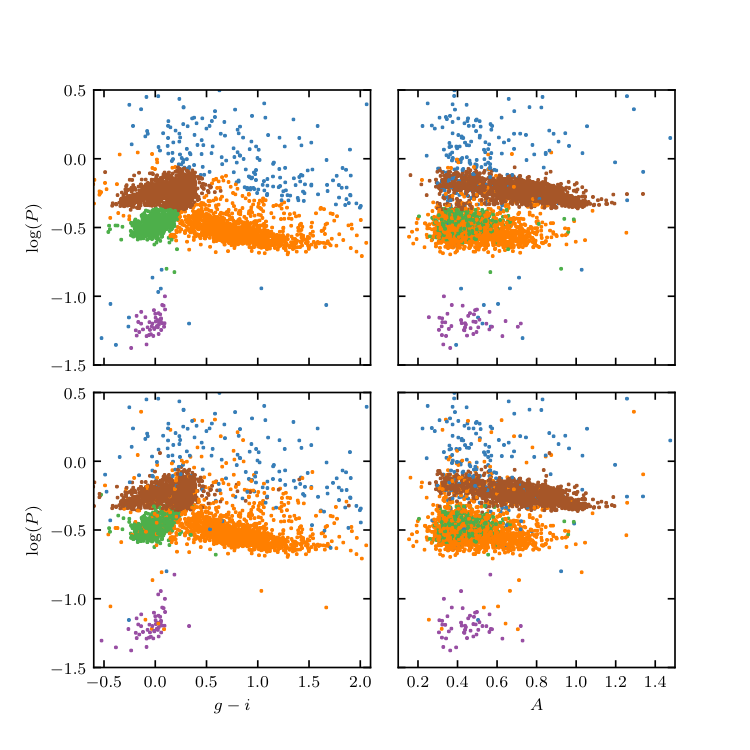

GMMBayes classification of LINEAR data¶
Figure 10.22
Supervised classification of periodic variable stars from the LINEAR data set using a Gaussian mixture model Bayes classifier. The training sample includes five input classes. The top row shows clusters derived using two attributes (g - i and log P) and the bottom row shows analogous diagrams for classification based on seven attributes (colors u - g, g - i, i - K, and J - K; log P, light-curve amplitude, and light-curve skewness). See table 10.2 for the classification performance.
{kind=link}
________________________________________________________________________________
fig_LINEAR_GMMBayes.py is not compiling:
________________________________________________________________________________
# Author: Jake VanderPlas
# License: BSD
# The figure produced by this code is published in the textbook
# "Statistics, Data Mining, and Machine Learning in Astronomy" (2013)
# For more information, see http://astroML.github.com
# To report a bug or issue, use the following forum:
# https://groups.google.com/forum/#!forum/astroml-general
from __future__ import print_function
import numpy as np
from matplotlib import pyplot as plt
from astroML.classification import GMMBayes
from sklearn.model_selection import train_test_split
from astroML.datasets import fetch_LINEAR_geneva
#----------------------------------------------------------------------
# This function adjusts matplotlib settings for a uniform feel in the textbook.
# Note that with usetex=True, fonts are rendered with LaTeX. This may
# result in an error if LaTeX is not installed on your system. In that case,
# you can set usetex to False.
if "setup_text_plots" not in globals():
from astroML.plotting import setup_text_plots
setup_text_plots(fontsize=8, usetex=True)
data = fetch_LINEAR_geneva()
attributes = [('gi', 'logP'),
('gi', 'logP', 'ug', 'iK', 'JK', 'amp', 'skew')]
labels = ['$u-g$', '$g-i$', '$i-K$', '$J-K$',
r'$\log(P)$', 'amplitude', 'skew']
cls = 'LCtype'
Ntrain = 3000
#------------------------------------------------------------
# Create attribute arrays
X = []
y = []
for attr in attributes:
X.append(np.vstack([data[a] for a in attr]).T)
LCtype = data[cls].copy()
# there is no #3. For a better color scheme in plots,
# we'll set 6->3
LCtype[LCtype == 6] = 3
y.append(LCtype)
#@pickle_results('LINEAR_GMMBayes.pkl')
def compute_SVM_results(i_train, i_test, n_components=5):
classifiers = []
predictions = []
Xtests = []
ytests = []
Xtrains = []
ytrains = []
for i in range(len(attributes)):
Xtrain = X[i][i_train]
Xtest = X[i][i_test]
ytrain = y[i][i_train]
ytest = y[i][i_test]
clf = GMMBayes(n_components, tol=1E-5, covariance_type='full',
random_state=0)
clf.fit(Xtrain, ytrain)
y_pred = clf.predict(Xtest)
classifiers.append(clf)
predictions.append(y_pred)
return classifiers, predictions
i = np.arange(len(data))
i_train, i_test = train_test_split(i, random_state=0, train_size=2000)
clfs, ypred = compute_SVM_results(i_train, i_test)
#------------------------------------------------------------
# Plot the results
fig = plt.figure(figsize=(5, 5))
fig.subplots_adjust(hspace=0.1, wspace=0.1)
class_labels = []
for i in range(2):
Xtest = X[i][i_test]
ytest = y[i][i_test]
amp = data['amp'][i_test]
# Plot the resulting classifications
ax1 = fig.add_subplot(221 + 2 * i)
ax1.scatter(Xtest[:, 0], Xtest[:, 1],
c=ypred[i], edgecolors='none', s=4, linewidths=0)
ax1.set_ylabel(r'$\log(P)$')
ax2 = plt.subplot(222 + 2 * i)
ax2.scatter(amp, Xtest[:, 1],
c=ypred[i], edgecolors='none', s=4, lw=0)
#------------------------------
# set axis limits
ax1.set_xlim(-0.6, 2.1)
ax2.set_xlim(0.1, 1.5)
ax1.set_ylim(-1.5, 0.5)
ax2.set_ylim(-1.5, 0.5)
ax2.yaxis.set_major_formatter(plt.NullFormatter())
if i == 0:
ax1.xaxis.set_major_formatter(plt.NullFormatter())
ax2.xaxis.set_major_formatter(plt.NullFormatter())
else:
ax1.set_xlabel(r'$g-i$')
ax2.set_xlabel(r'$A$')
#------------------------------------------------------------
# Second figure
fig = plt.figure(figsize=(5, 5))
fig.subplots_adjust(left=0.11, right=0.95, wspace=0.3)
attrs = ['skew', 'ug', 'iK', 'JK']
labels = ['skew', '$u-g$', '$i-K$', '$J-K$']
ylims = [(-1.8, 2.2), (0.6, 2.9), (0.1, 2.6), (-0.2, 1.2)]
for i in range(4):
ax = fig.add_subplot(221 + i)
ax.scatter(data['gi'][i_test], data[attrs[i]][i_test],
c=ypred[1], edgecolors='none', s=4, lw=0)
ax.set_xlabel('$g-i$')
ax.set_ylabel(labels[i])
ax.set_xlim(-0.6, 2.1)
ax.set_ylim(ylims[i])
#------------------------------------------------------------
# Save the results
#
# run the script as
#
# >$ python fig_LINEAR_clustering.py --save
#
# to output the data file showing the cluster labels of each point
import sys
if len(sys.argv) > 1 and sys.argv[1] == '--save':
filename = 'cluster_labels_gmm.dat'
print("Saving cluster labels to", filename)
from astroML.datasets.LINEAR_sample import ARCHIVE_DTYPE
new_data = np.zeros(len(data),
dtype=(ARCHIVE_DTYPE + [('2D_cluster_ID', 'i4'),
('7D_cluster_ID', 'i4')]))
# switch the labels back 3->6
for i in range(2):
ypred[i][ypred[i] == 3] = 6
# need to put labels back in order
class_labels = [-999 * np.ones(len(data)) for i in range(2)]
for i in range(2):
class_labels[i][i_test] = ypred[i]
for name in data.dtype.names:
new_data[name] = data[name]
new_data['2D_cluster_ID'] = class_labels[0]
new_data['7D_cluster_ID'] = class_labels[1]
fmt = ('%.6f %.6f %.3f %.3f %.3f %.3f %.7f %.3f %.3f '
'%.3f %.2f %i %i %s %i %i\n')
F = open(filename, 'w')
F.write('# ra dec ug gi iK JK '
'logP Ampl skew kurt magMed nObs LCtype '
'LINEARobjectID 2D_cluster_ID 7D_cluster_ID\n')
for line in new_data:
F.write(fmt % tuple(line[col] for col in line.dtype.names))
F.close()
plt.show()